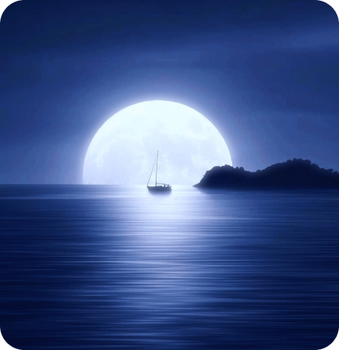

<!DOCTYPE html>
<html lang="pt-br">
  <head>
    <meta charset="UTF-8" />
    <meta name="viewport" content="width=device-width, initial-scale=1.0" />
    <meta name="description" content="blog Marcos" />
    <meta
      name="keywords"
      content="blog marcos, fiap, ads, programação, global solution, oceano. "
    />

    <title>BlOG MARCOS</title>
  </head>
</html>

<header>
  
</header>

<main>
  <section>
    
    <h3>Oceano</h3>
    <p>"Cuide do oceano hoje para que ele cuide de nós amanhã..</p>
  </section>

  <section>
    <article>
      <h4>Maio 04,2024</h4>
      <h3>A imensidão Azul</h3>
      <p>
        Os oceanos são divididos em cinco grandes áreas: Pacífico, Atlântico,
        Índico, Antártico e Ártico. Cada um desses oceanos possui
        características únicas, desde a temperatura da água até a
        biodiversidade. O Oceano Pacífico é o maior e mais profundo, abrigando a
        Fossa das Marianas, o ponto mais profundo da Terra. Já o Atlântico é
        conhecido por suas correntes poderosas, como a Corrente do Golfo, que
        tem um grande impacto no clima global.
      </p>
    </article>
  </section>

  <section>
    <article>
      <h4>Maio 01,2024</h4>
      <h3>Pesca Sustentável</h3>
      <p>
        Promover práticas de pesca sustentável é essencial para proteger as
        populações de peixes e os ecossistemas marinhos. Isso inclui
        regulamentações rigorosas, cotas de captura e técnicas de pesca
        seletivas que minimizam o impacto ambiental.
      </p>
    </article>
  </section>

  <section>
    <article>
      <h4>Abril 28,2024</h4>
      <h3>Áreas Marinhas Protegida</h3>
      <p>
        A criação de áreas marinhas protegidas (AMPs) é uma estratégia eficaz
        para preservar ecossistemas marinhos e restaurar populações de espécies.
        As AMPs restringem atividades humanas prejudiciais, permitindo que os
        habitats se recuperem.
      </p>
    </article>
  </section>

  <footer>
    <ul>
      <li><a href="./index.html">pagina inicial</a></li>
      <li><a href="./blog.html">blog</a></li>
      <li><a href="./doresDoOceano.html">dores do oceano</a></li>
    </ul>
  </footer>
</main>
